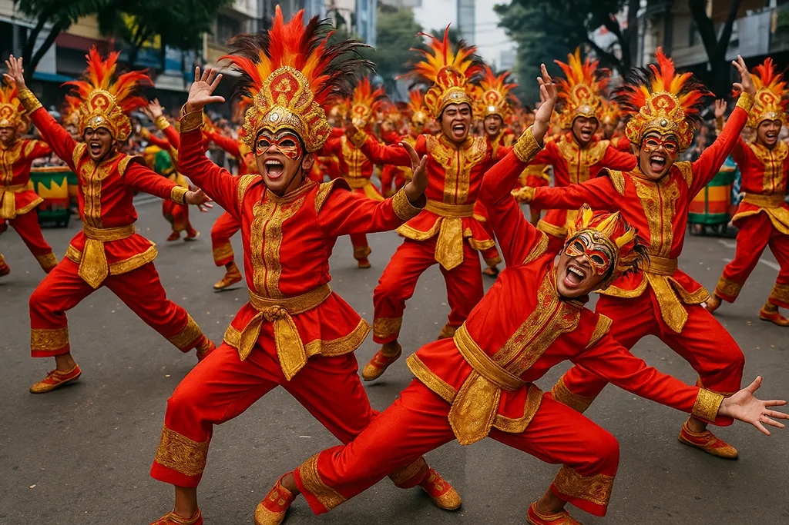
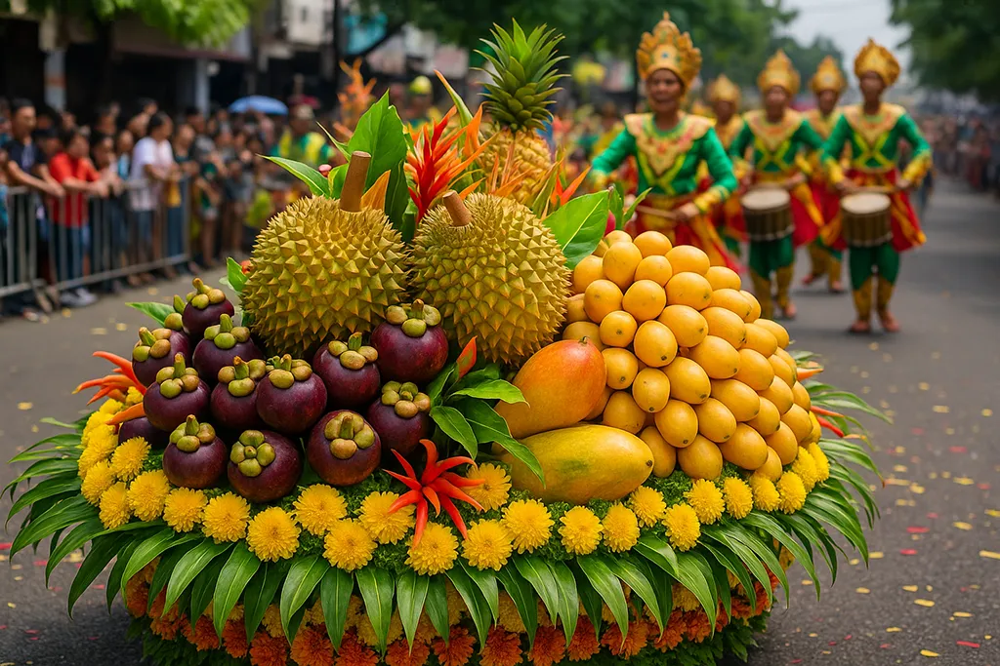
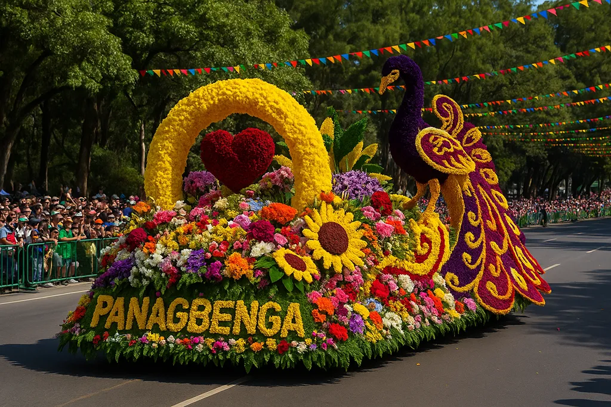
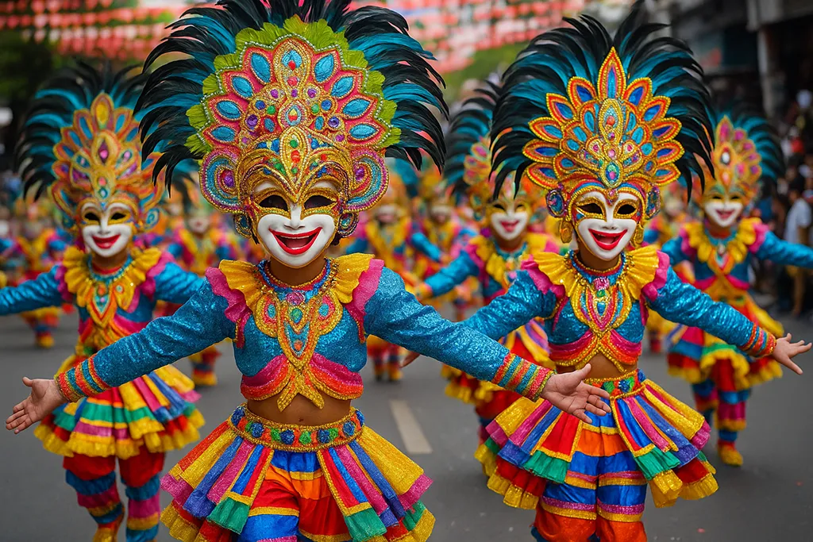
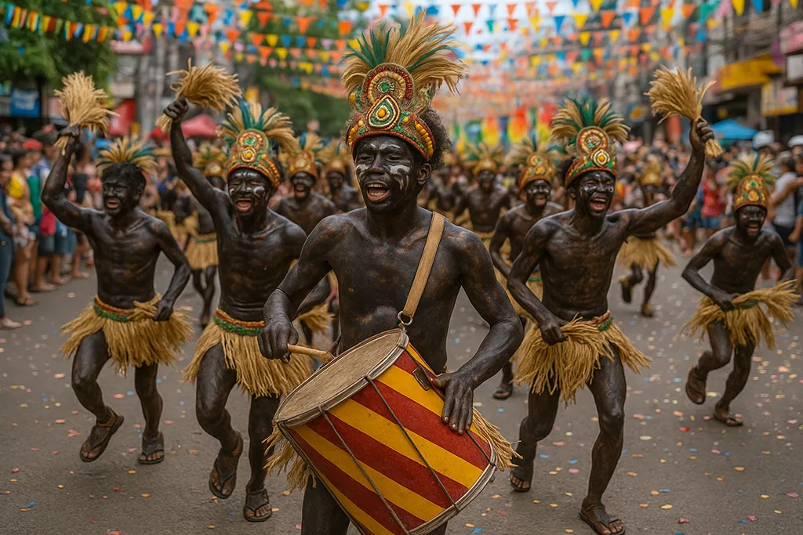

Sinulog Festival
Sinulog is celebrated in Cebu and is known for lively street dances, drumbeats, and colorful costumes. The celebration honors the Santo Niño and attracts visitors from many places.
Location: Cebu City
Celebrate the color, rhythm, and spirit of Filipino communities.
Explore celebrations
Festivals in the Philippines bring communities together through music, dance, costumes, food, faith, and local tradition. Many celebrations reflect the history and identity of the place where they are held.
From energetic street dancing to flower-covered floats and smiling masks, each festival offers a different visual experience. Visitors can enjoy the celebration while learning why it is meaningful to local residents.

Sinulog is celebrated in Cebu and is known for lively street dances, drumbeats, and colorful costumes. The celebration honors the Santo Niño and attracts visitors from many places.
Location: Cebu City

Panagbenga is Baguio City's flower festival. Its grand parade features floats decorated with flowers, creative costumes, and performances inspired by the culture of the Cordillera region.
Meaning of Panagbenga: Season of blooming

MassKara is recognized for performers wearing bright costumes and smiling masks. Street dance competitions fill Bacolod City with music, movement, and an optimistic atmosphere.
Location: Bacolod City
Large celebrations can be exciting and crowded. Visitors should prepare in advance and show respect for the people, traditions, and public spaces involved.

A festival is not only a visual attraction. It may express devotion, commemorate local history, celebrate a harvest, or show the creativity and resilience of a community.
Local artists, dancers, musicians, vendors, and volunteers work together to prepare these events. Their contributions transform a public celebration into a shared cultural experience.
Remember: Celebrate with the community, not only for photographs.